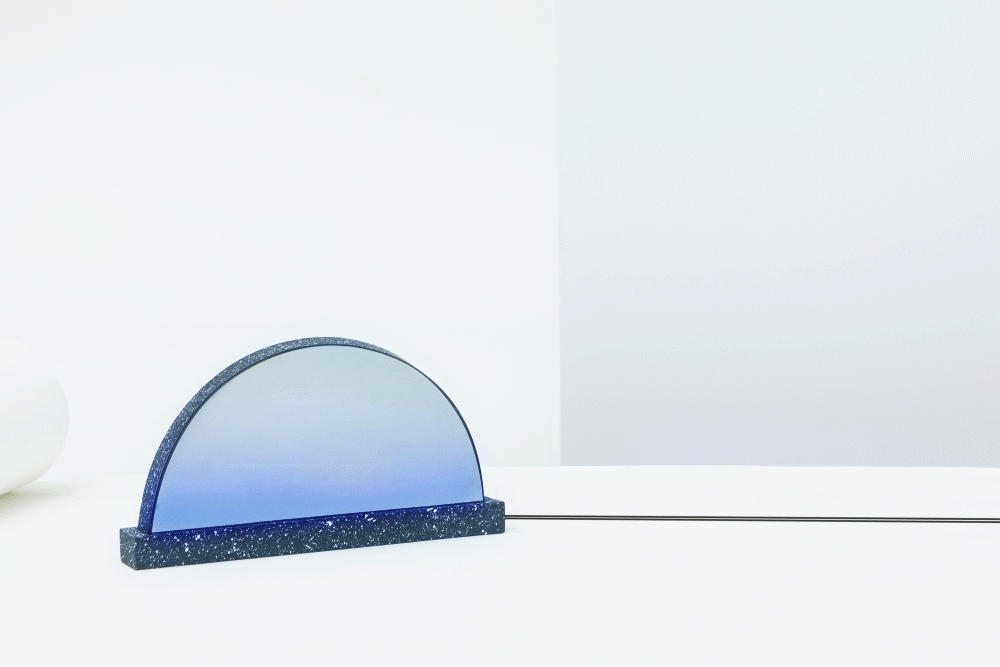
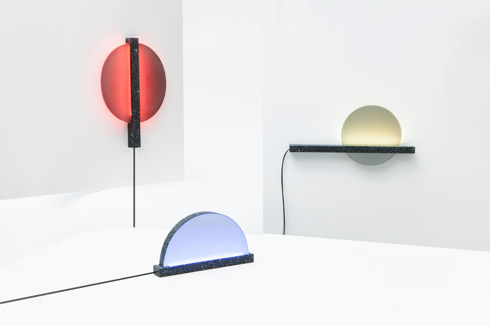
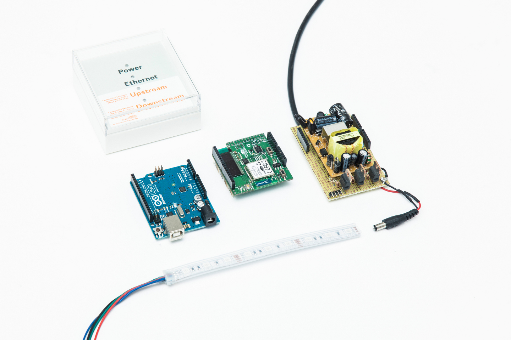

Intero: € 2,00
Ridotto famiglia (due adulti più minorenni): € 5,00
Ridotto (minori di 18 anni, oltre 60 anni, scolaresche, gruppi e convenzionati): € 1,50
Gratuito: titolari Carta Musei della Provincia di Ancona, Carta Musei Marche, minori di 6 anni
Telefono: 0731.89495 - 0731.89713 - Numero verde 800.439392
Teatro Comunale - Via Circonvallazione
60036, Montecarotto (AN)
E-mail: museidascoprire@libero.it
Vai alla mappa